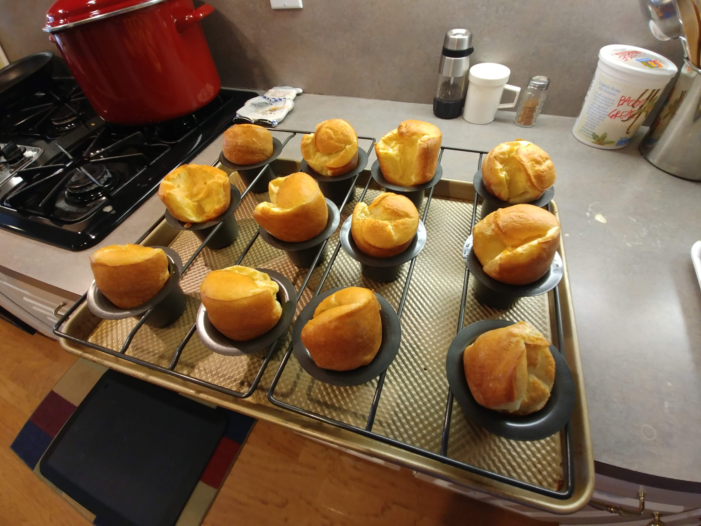

Yorkshire Pudding

Ingredients
Eight-Cup
- 166 g all-purpose flour
- 150 g water
- 150 g milk
- 4 large eggs
- ½ tsp salt
- Beef dripping or bacon grease
Twelve-Cup
- 250 g all-purpose flour
- 225 g water
- 225 g milk
- 6 eggs
- ¾ tsp salt
- Beef dripping or bacon grease
Directions
- Put 8 g of beef dripping into each of 12 pudding cups and place in an oven as it preheats to 410°. If using bacon grease, use just enough to cover about ½ of the bottom of the cup.
- Whisk eggs and salt together, then add flour and whisk into a thick paste. Add some of the liquid and whisk until smooth. Once this is done, it is safe to add the rest of the liquids without lumping. When all the ingredients are well mixed, give the mixture a good whisk for about 1-2 minutes to incorporate some air and facilitate rising.
- Transfer the batter to a jug or mixing cup and hold in the refrigerator.
- When the oven has preheated, remove the cups with melted dripping and fill them no more than halfway with the batter.
- Bake for 25-30 minutes without opening to door.
Chef's Notes
- Do not use convection with Yorkshire pudding. The forced air prevents them from rising completely
- You can add some Colman's dry mustard to the batter to add a little spice.
Michael Fritsche
mbf@fritsche.org